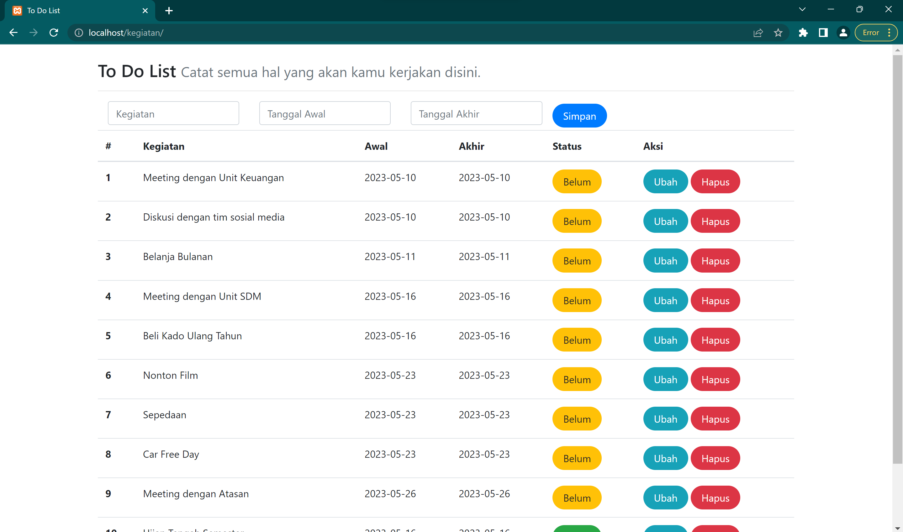
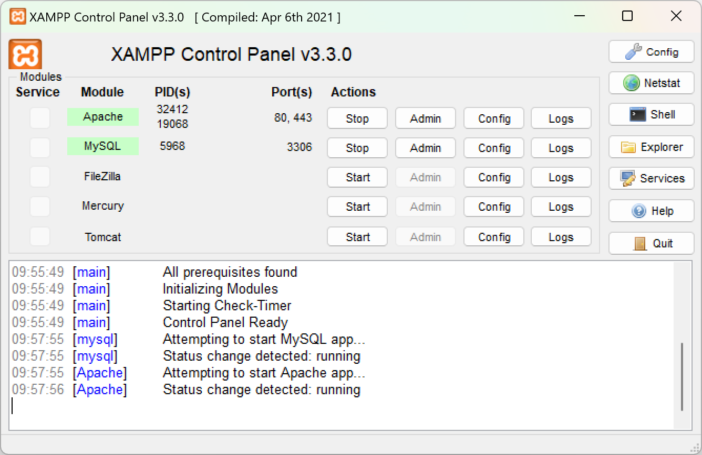
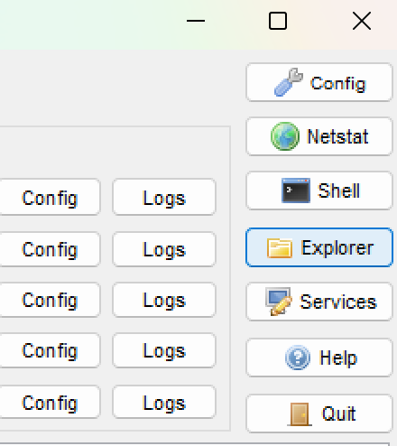
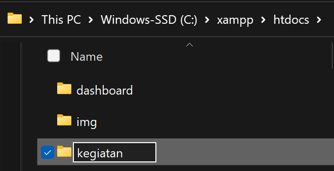
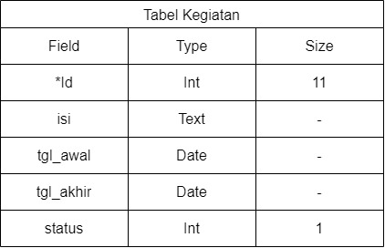

Program To Do List
Berikut adalah tampilan dari to do list untuk latihan membuat web sederhana.

Sebelum kita mulai membuat program to do list tersebut ada beberapa tahapan yang diperlukan, seperti menghidupkan server yang digunakan (xampp), membuat database, koneksi, hingga membuat tampilan dari program.
XAMPP
Untuk dapat menampilkan file php memerlukan server sehingga diperlukan xampp untuk menampilkan php pada server dengan mengaktifkan apache.

Pada panel xampp, klik start pada Apache dan MySQL untuk mengaktifkan. Apache diperlukan karena sebagai web serer untuk mengakses localhost dan menampilkan file php. Sedangkan pada MySQL diperlukan untuk manajemen dan akses ke database.
Folder di htdocs
Untuk dapat mengakses website localhost dari xampp, diperlukan folder project di direktori C:\xampp\htdocs, sesuai dengan direktori xampp yang sedang aktif. Untuk memastikan lokasi direktori xampp dapat klik tombol Explorer pada control panel xampp

Setelah membuka folder xampp lalu htdocs, selanjutna membuat folder projek.

Folder projek ini digunakan sebagai tempat menyimpan file php dan file lain untuk yang digunakan untuk membuat web yang berhubungan dengan projek.
Database
Dari contoh di atas hanya diperlukan 1 tabel, yaitu tabel yang dapat menyimpan daftar kegiatan. Berikut adalah komponen-komponen dari tabel yang diperlukan.

Dari tabel diatas dapat dibuat pada localhost/phpmyadmin dengan membuat database baru lalu membuat tabel baru dengan nama tabel “kegiatan”. Buat field dan sesuaikan pada tabel di atas mulai dari nama field, type dan sizenya. Field “id” berfungsi sebagai primary key. Pada field isi, tgl_awal, dan tgl_akhir tidak memerlukan size karena bertype text dan date. Pada field status bertype int dengan size hanya 1 karena nantinya akan menyimpan nilai 0 dan 1 yang merepresentasikan belum dan sudah.
Koneksi
Koneksi diperlukan untuk menghubungkan php dengan database yang kita buat, dimana sebelumnya kita membuat database sql. Untuk menghubungkan php dengan sql menggunakan argumen mysqli_connect. Maka perlu membuat file koneksi.php lalu di include-kan pada file php yang terhubung dengan database.
<?php
$databaseHost = 'localhost';
$databaseName = 'kegiatan';
$databaseUsername = 'root';
$databasePassword = '';
$mysqli = mysqli_connect($databaseHost, $databaseUsername,
$databasePassword, $databaseName);
Pada mysqli_connect terdapat beberapa parameter, yaitu mysql_host, mysql_host, mysql_user, mysql_password, dan mysql_database.
mysql_host
Jika menjalankan MySQL menggunakan XAMPP di komputer yang sama dengan tempat web server Apache berjalan, maka alamat ini bisa diisi dengan “localhost” atau “127.0.0.1”. Namun jika MySQL server dijalankan dari perangkat komputer server lain, argumen ini akan berisi IP address dari komputer server tersebut.mysql_user
berisi nama pengguna MySQL yang digunakan untuk login ke server database, seperti “root”, “admin”, atau “nama_anda”. Karena kita menggunakan MySQL dari XAMPP, secara default, nama pengguna yang digunakan adalah “root”. Jadi, jika Anda tidak mengubah pengaturan default XAMPP, Anda dapat menggunakan “root” sebagai nilai argumen nama pengguna saat memuat fungsi mysqli_connect().mysql_password
diisi dengan password user yang terdaftar pada server mysql. Secara default karena kita menggunakan MySQL dari xampp tanpa mengubah passwordnya maka nilai passwordnya adalah kosong sehingga dapat diisikan ““.mysql_database
pada parameter mysql_database diisikan nama database yang telah kita buat. Database yang kita buat sebelumnya adalah kegiatan atau sesuai yang telah anda buat.
Index
Pada langkah sebelumnya kita telah membuat database dan koneksi untuk menghubungkan database dengan file php, selanjutnya adalah membuat file website. File website utama yang akan otomatis ditampilkan ketika telah membuka htdocs/(folder projek) adalah index.php. Pada file index perlu memuat atau meload file koneksi.php yang telah dibuat sebelumnya agar website dapat terhubung pada database yang telah dibuat.
<?php
include_once("koneksi.php");
?>
Untuk memuat file php lain dapat menggunakan fungsi php yaitu require, require_once atau include atau include_once. Lalu apa perbedaan fungsi-fungsi tersebut?
- Jika fungsi include, ketika terjadi error pada file yang di panggil maka akan menampilkan warning error pada kode yang error saja, namun kode-kode selanjutnya akan tetap dijalankan.
- Sedangkan fungsi require, ketika terjadi error pada file yang dipanggil maka akan menampilkan fatal error, atau menghentikan program yang berjalan sehingga kode program setelahnya tidak akan dieksekusi.
- Untuk include_once dan require_once sama dengan fungsi include dan require, namun fungsi itu hanya akan meload file sekali, sehingga ketika terdapat program yang memuat file yang sama setelahnya tidak akan dijalankan.
Memulai dengan kode html untuk membuat website.
<!DOCTYPE html>
<html lang="en">
<head>
<meta charset="UTF-8">
<meta name="viewport" content="width=device-width,
initial-scale=1.0">
<!-- Bootstrap offline -->
<link rel="stylesheet" href="assets/css/bootstrap.css">
<!-- Bootstrap Online -->
<link href="https://cdn.jsdelivr.net/npm/bootstrap@5.0.2/dist/css/bootstrap.min.css"
rel="stylesheet"
integrity="sha384-EVSTQN3/azprG1Anm3QDgpJLIm9Nao0Yz1ztcQTwFspd3yD65VohhpuuCOmLASjC"
crossorigin="anonymous">
<title>To Do List</title> <!--Judul Halaman-->
</head>
<body>
</body>
</html>Pada vscode ketika menuliskan html maka akan muncul pilihan template html yang akan digunakan, pada kode diatas menggunakan html5. Seperti yang telah di pelajari sebelumnya mengenai framework bootstrap, perlu memuat file bootstrap. Jika dalam menjalankan program selalu terhubung dengan internet dapat memuat css maupun js bootstrap dapat diakses pada halaman dokumentasi bootstrap bagian introduction. Namun jika dalam keadaan jarang terhubung internet maka dapat mengunduh terlebih dahulu file bootstrap lalu dapat meng-export-nya dan membuat folder asets pada lokasi folder projek untuk menyimpan file paket dari bootstrap.
Pada body diisikan konten yang ingin ditampilkan, yaitu judul, form, tabel, dan button. Untuk menggunakan framework pada komponen tersebut dapat melihat pada halaman docs bootstrap untuk melihat dokumentasi dari penggunakan bootstrap lalu cari dokumentasi komponen yang ingin digunakan. Pilih dokumentasi yang sesuai dan modifikasi sesuai dengan kebutuhan yang ingin digunakan.
<div class="container">
Pada tampilan yang dinginkan adalah memusatkan dan mengelompokkan konten utama, maka digunakan container.
Judul (heading)
<h3>
To Do List
<small class="text-muted">
Catat semua hal yang akan kamu kerjakan disini.
</small>
</h3>
<hr> Menampilkan judul dapat menggunakan heading 1 hingga 6. Semakin besar angka heading maka akan semakin kecil ukuran dari teks yang akan ditampilkan. Pada judul menampilkan kalimat “To Do List” sebagai kalimat utama dan “Catat semua hal yang akan kamu kerjakan” sebagai slogan atau kalimat penjelas sehingga pada slogan tersebut dimasukkan kedalam tag small dengan kelas text-muted untuk mengecilkan huruf dan memberikan warna seakan redup karena teks tersebut memilikki tingkat kepentingan lebih rendah.
Form
<form class="form-inline" method="POST" action=""
name="myForm" onsubmit="return(validate());">
<!-- Kode php untuk menghubungkan form dengan database -->
<?php
$isi = '';
$tgl_awal = '';
$tgl_akhir = '';
if (isset($_GET['id'])) {
$ambil = mysqli_query($mysqli,
"SELECT * FROM kegiatan
WHERE id='" . $_GET['id'] . "'");
while ($row = mysqli_fetch_array($ambil)) {
$isi = $row['isi'];
$tgl_awal = $row['tgl_awal'];
$tgl_akhir = $row['tgl_akhir'];
}
?>
<input type="hidden" name="id" value="<?php echo
$_GET['id'] ?>">
<?php
}
?>
<div class="row">
<div class="col">
<label for="inputIsi" class="visually-hidden">
Kegiatan
</label>
<input type="text" class="form-control" name="isi"
placeholder="Kegiatan"
value="<?php echo $isi ?>">
</div>
<div class="col">
<label for="inputTanggalAwal" class="visually-hidden">
Tanggal Awal
</label>
<input type="text" class="form-control" name="tgl_awal"
placeholder="Tanggal Awal"
value="<?php echo $tgl_awal ?>">
</div>
<div class="col">
<label for="inputTanggalAkhir" class="visually-hidden">
Tanggal Akhir
</label>
<input type="text" class="form-control" name="tgl_akhir"
placeholder="Tanggal Akhir"
value="<?php echo $tgl_akhir ?>">
</div>
<div class="col">
<button type="submit" class="btn btn-primary rounded-pill px-3"
name="simpan">Simpan</button>
</div>
</div>
</form>Terdapat tiga input pada form, yaitu kegiatan, tanggal awal, dan tanggal akhir. Namun pada database terdapat field id yang disetting untuk autoincrement sehingga akan terisi otomatis sesuai urutan data disimpan. pada bootstrap v5 untuk membuat form dalam satu baris dapat menggunakan grid, yaitu dengan kelas “row” dan “col”. Pada form akan menampilkan placeholder keterangan sesuai inputan form. Sebenarnya terdapat label, namun karena telah terdapat placeholder maka label tersebut kurang berfungsi sehingga di gunakan kelas “visually-hidden” untuk tidak menampilkan pada tampilan web. Label bisa saja dihapus namun untuk kebutuhan aksesibilitas maka label tersebut disembunyikan saja.
Terdapat kode PHP untuk menghubungkan form dengan database, dengan cara mengambil data dari database lalu dimunculkan melalui value berdasarkan variabel yang sesuai, berdasarkan id dari data ketika dilakukan ubah data. Untuk mengambil data dari database digunakan perintah SQl:
SELECT * FROM kegiatan WHERE id='" . $_GET['id'] . "'Nilai id didapat dari get data id yang dikirimkan ketika klik tombol ubah.
Selain form juga terdapat button yang bertype submit dengan kelas dari btn, btn-primary untuk memberikan warna biru atau dapat memberi variasi lain yang sesuai dengan btn-(kode warna yang ada pada dokumentasi bootstrap). Dalam pemilihan warna pada tombol harus disesuaikan dengan user experience.
Tabel
<table class="table table-hover">
<!--thead atau baris judul-->
<thead>
<tr>
<th scope="col">#</th>
<th scope="col">Kegiatan</th>
<th scope="col">Awal</th>
<th scope="col">Akhir</th>
<th scope="col">Status</th>
<th scope="col">Aksi</th>
</tr>
</thead>
<!--tbody berisi isi tabel sesuai dengan judul atau head-->
<tbody>
<!-- Kode PHP untuk menampilkan semua isi dari tabel urut
berdasarkan status dan tanggal awal-->
<?php
$result = mysqli_query($mysqli, "SELECT * FROM kegiatan ORDER BY status,tgl_awal");
$no = 1;
while ($data = mysqli_fetch_array($result)) {
?>
<tr>
<th scope="row"><?php echo $no++ ?></th>
<td><?php echo $data['isi'] ?></td>
<td><?php echo $data['tgl_awal'] ?></td>
<td><?php echo $data['tgl_akhir'] ?></td>
<td>
<?php
if ($data['status'] == '1') {
?>
<a class="btn btn-success rounded-pill px-3" type="button"
href="index.php?id=<?php echo $data['id'] ?>&aksi=ubah_status&status=0">
Sudah
</a>
<?php
} else {
?>
<a class="btn btn-warning rounded-pill px-3" type="button"
href="index.php?id=<?php echo $data['id'] ?>&aksi=ubah_status&status=1">
Belum</a>
<?php
}
?>
</td>
<td>
<a class="btn btn-info rounded-pill px-3" href="index.php?id=<?php echo $data['id'] ?>">Ubah</a>
<a class="btn btn-danger rounded-pill px-3" href="index.php?id=<?php echo $data['id'] ?>&aksi=hapus">Hapus</a>
</td>
</tr>
<?php
}
?>
</tbody>
</table>Pada Tabel akan menampilkan data-data dari database kegiatan yang diurutkan berdasarkan status dan tanggal awal melalui perintah SQL :
SELECT * FROM kegiatan ORDER BY status,tgl_awal
Selain itu pada kode php juga mendeklarasikan dan memberi nilai awal $no = 1 untuk menampilkan nomor urut data dengan menggunakan looping while3 sebanyak data yang ada dalam database. Nomor yang ditampilkan bukanlah id dari database.
Selain menampilkan data juga terdapat bagian status yang menggunakan kondisi ketika belum maka nilai awalnya adalah 0 namun ketika di klik maka akan melakukan fungsi ubah_status (yang akan kita buat nanti) menjadi 1 atau sudah begitupun sebaliknya jika data statusnya sudah.
Ada juga tombol ubah dan hapus, dimana tombol ubah berfungsi untuk mengubah data pada baris yang dipilih dan hapus juga akan menghapus data pada baris yang dipilih.
<?php
if (isset($_POST['simpan'])) {
if (isset($_POST['id'])) {
$ubah = mysqli_query($mysqli, "UPDATE kegiatan SET
isi = '" . $_POST['isi'] . "',
tgl_awal = '" . $_POST['tgl_awal'] . "',
tgl_akhir = '" . $_POST['tgl_akhir'] . "'
WHERE
id = '" . $_POST['id'] . "'");
} else {
$tambah = mysqli_query($mysqli, "INSERT INTO kegiatan(isi,tgl_awal,tgl_akhir,status)
VALUES (
'" . $_POST['isi'] . "',
'" . $_POST['tgl_awal'] . "',
'" . $_POST['tgl_akhir'] . "',
'0'
)");
}
echo "<script>
document.location='index.php';
</script>";
}
if (isset($_GET['aksi'])) {
if ($_GET['aksi'] == 'hapus') {
$hapus = mysqli_query($mysqli, "DELETE FROM kegiatan WHERE id = '" . $_GET['id'] . "'");
} else if ($_GET['aksi'] == 'ubah_status') {
$ubah_status = mysqli_query($mysqli, "UPDATE kegiatan SET
status = '" . $_GET['status'] . "'
WHERE
id = '" . $_GET['id'] . "'");
}
echo "<script>
document.location='index.php';
</script>";
}
?>Kode tersebut merupakan bagian dari skrip PHP yang digunakan untuk memproses data yang dikirim melalui formulir atau melalui parameter pada URL. Berikut adalah penjelasan baris per baris:
Dengan menggunakan kode di atas, data yang dikirim melalui formulir akan diproses dan disimpan atau diubah dalam tabel “kegiatan” berdasarkan tindakan yang diambil. Jika terdapat permintaan melalui parameter pada URL, seperti menghapus data atau mengubah status, tindakan tersebut akan dieksekusi dan kemudian pengguna akan diarahkan kembali ke halaman “index.php”.